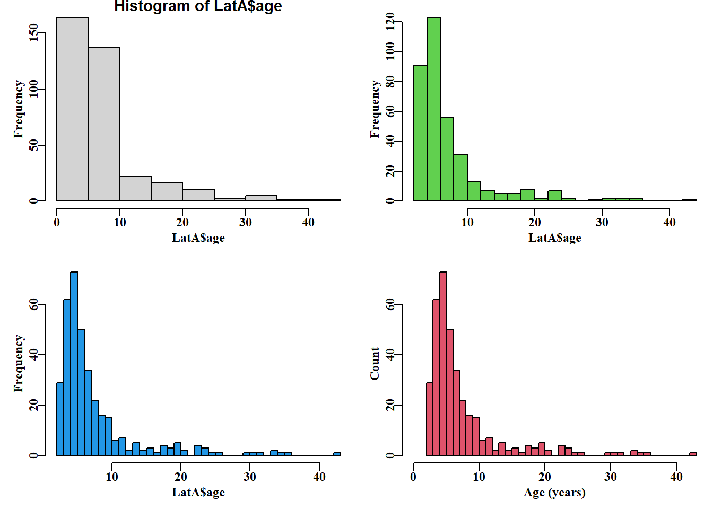

这本书是《渔业建模和定量方法》（Modelling and Quantitative Methods in Fisheries）中描述的一些材料的分支和改编版本 (Haddon 2011)。主要变化涉及使用 R语言（R 核心团队，2019 ）以扩展和实施选定的渔业和生态分析。这本书以不同的文字，更多是强调如何进行分析，在许多地方，使用的例子将在细节上与先前书中使用的不同。
使用 R语言 进行分析与使用 Microsoft Excel (Haddon 2011)（如Haddon, 2001, 2011 ）是非常不同的命题。这意味着分析的机制和结果不会直接摆在分析人员面前。但是，即使在使用 Excel时，如果分析涉及到在Visual Basic for Application 中使用宏，那也涉及到一定程度的抽象。使用 R语言 作为编程语言只是在所有的例子中完成抽象。一般来说，我尽量坚持”没坏就不修”的原则，所以你可以假设有很好的理由搬到 R。
2.2 R语言中的编程
开源软件R语言对于进行统计分析显然很有用，但它也提供了非常灵活和强大的编程环境。对于科学程序员来讲，R有很多优势，因为它是一种非常高级的语言，可以通过编写自己的脚本或函数来扩展这些命令，以进行专门的分析或其他操作，如数据操作或定制制图。如此灵活有很多优点，但也意味着学习 R 的语法可能是面临着挑战。很多可用的，大多是开源的R包（请参阅https://cran.r-project.org/），增强其灵活性，但也有可能增加其语法的复杂性。
因此，本书不是用来教任何人如何使用 R 编程的。事实上，此处包含的 R 代码很少优雅，也不太可能是万无一失的，但其目的是尽可能简单地说明使用 R 用数据拟合生物模型的不同方法。它还试图描述一些复杂性，如处理不确定性，这个问题你一直会碰到，以及如何处理他们。本书的重点是开发和拟合数据的模型，使其运行，并展示结果的输出。然而，R 中有几个构造将在接下来的内容中多次使用，本章旨在引入它们，以便用户在相对较新的 R 时不会放慢速度，但需要强调的是，假设用户熟悉 R。我们将简要介绍如何开始，如何检查函数内的代码、打印、绘图、因子的使用，以及函数的使用和编写。重要的是，我们还将考虑使用 R 的非线性解算或优化。会考虑许多示例，并包括示例数据集以加快这些示例速度。但是，如果读者有自己的数据集，那么这些数据集应尽可能使用，因为很少有东西能鼓励学习和理解，以及分析自己的数据。
用于各种各样分析的大量 R 包（几千个）（见https://cran.r-project.org/）是R语言令人难以置信的强项，但公平地说，这种多样性也导致了学习所有可用函数所需的 R 语法的一些复杂性。基础 R（安装 R 时状态）自动包含 7个 R 包（请在控制台中使用 sessionInfo() 尝试查看列表）。因此， 在 R 中使用R包通常情况下是很自然的，不使用其他人的包将是一个非常愚蠢的想法，因为这意味着将有大量的完全可用的包的重复使用，但因为这里的目的是说明分析的细节，而不是专注于 R 语言，主要是使用默认或”基础”安装，虽然在少数地方，建议自己将作出考虑和探索R包。例如，当我们需要使用多元正态分布时，我们将使用 mvtnorm 包。在 RStudio 中使用 [package] 选项卡，很容易安装这些 R 包。或者，控制台中使用 install.packages("mvtnorm") 安装，这也应该做的工作。其他包将根据需要进行安装。无论我在哪里写 install library(xxxxx)，都应理解为安装 指定库及其所有依赖库。许多程序包都需要并调用其他程序包，因此除了程序包自身外，还需要有其它依赖包。例如，MQMF 包需要安装包 mvtnorm 和 MASS。如果你在控制台中输入 packageDescription("MQMF)，就会列出程序包的描述文件内容（所有程序包都有显示）。在显示内容中你会看到，MASS 和 mvtnorm 都需载入，因此它们需要随着 MQMF 一起安装。
这本书侧重于使用”基础”R包，这是一个有意识的决定。目前，R 社区内部正在发生一些重要发展，特别是所谓的”tidyverse”的出现，其为的库集，即旨在改进或至少改变 R 使用方式。您可以在https://www.tidyverse.org/上探索使用 R 的新方法，其主页目前指出：tidyverse 是专为数据科学设计的 R 包的有意见的集合。所有软件包都具有基本的设计理念、语法和数据结构。其中许多创新确实是有效的，非常值得学习。但是，基础”R 的一个优点是，它非常稳定，只有经过对与以前版本兼容性的广泛测试后才引入更改。此外，开发使用”基础”R 的基准，可以更知情地选择如果您愿意，整洁的哪些部分可以采用。无论情况如何，在这里，我们将使用尽可能少的额外库，除了’基地’安装和书自己的包。
2.2.3 开始使用 MQMF
MQMF 程序包已经过测试，在 PC、Linux（Fedora） 和Apple计算机上的行为都与本书中的预期一致。在 Apple 计算机上，有必要在 PC 上安装包的 .tar.gz 版本，在 PC 上，无论是 .zip 还是 .tag.gz 都可以安装，RStudio 也可以为您安装此 R 包。tar.gz 版本的一个优点是，源文件和库的 tar.gz 存档包含所有原始代码，以便在您愿意时进行更深入的检查。此代码也可以在 MQMF github 仓库中检查。
安装 MQMF 包后，通过命令 library(MQMF) 可以将该包含在 R 会话中。通过使用 ?MQMF 或 ?MQMF-Package 立即生成某些文档。该列表的底部是包名、版本号和”索引”的超链接。如果您单击该”索引”链接，则会生成与 MQMF内与导出函数和数据集相关的所有文档列表；这也可适用于检查任何 R 包。通过打开所需的链接或使用 ? 操作符可列出包中包括的每个输出函数和数据集，也可以获得每个包的更多详细信息；例如，尝试在控制台键入或输入 ?search 或 ?mean。RStudio 的 Help 选项卡中生成的材料描述了该函数的功能，并且通常至少提供了如何使用函数的示例。在本书中，可以在 RStudio 中的控制台输入R代码或作为脚本保存并发送给 R 以 consolas 字体（所有字符都使用相同空间的单间间字体）在略带灰色的框形中呈现。包名用粗体表示，函数名以 function() 开始，以圆形括号结束。括号是将其与其他 code 文本区分开来，后者通常将指变量、参数和函数参数。
#make a function called countones2, don't overwrite original countones2<-function(x)return(length(which(x==1)))# or countones3<-function(x)return(length(x[x==1]))vect<-c(1,2,3,1,2,3,1,2,3)# there are three ones countones2(vect)# should both give the answer: 3
[1] 3
代码
countones3(vect)
[1] 3
代码
set.seed(7100809)# if repeatability is desirable. matdat<-matrix(trunc(runif(40)*10),nrow=5,ncol=8)matdat#a five by eight matrix of random numbers between 0 - 9
#A more complex function prepares to plot a single base graphic #It has the syntax for opening a window outside of Rstudio and #defining a base graphic plotprep2<-function(plots=c(1,1),width=6, height=3.75,usefont=7, newdev=TRUE){if((names(dev.cur())%in%c("null device","RStudioGD"))&(newdev)){dev.new(width=width,height=height,noRStudioGD =TRUE)}par(mfrow=plots,mai=c(0.45,0.45,0.1,0.05),oma=c(0,0,0,0))par(cex=0.75,mgp=c(1.35,0.35,0),font.axis=usefont,font=usefont, font.lab=usefont)}# see ?plotprep; see also parsyn() and parset()
library(MQMF)# The development of a simple graph see Fig. 2.1data("LatA")#LatA = length at age data; try properties(LatA) #The statements below open the RStudio graphics window, but opening #a separate graphics window using plotprep is sometimes clearer. #plotprep(width=6.0,height=5.0,newdev=FALSE) setpalette("R4")#a more balanced, default palette see its help par(mfrow=c(2,2),mai=c(0.45,0.45,0.1,0.05))# see ?parsyn par(cex=0.75, mgp=c(1.35,0.35,0), font.axis=7,font=7,font.lab=7)hist(LatA$age)#examine effect of different input parameters hist(LatA$age,breaks=20,col=3,main="")# 3=green #try ?hist hist(LatA$age,breaks=30,main="",col=4)# 4=blue hist(LatA$age, breaks=30,col=2, main="", xlim=c(0,43), #2=red xlab="Age (years)",ylab="Count")

An example series of histograms using data from the MQMF data set LatA, illustrating how one can iterate towards a final plot. See also the function uphist().
DepCat<-as.numeric(levels(DepCat))[DepCat]# try ?facttonum #converts replicates in DepCat to numbers, not just the levels 5*DepCat[3]# now treat DepCat as numeric
如果你打算使用 R 来进行任何分析，你通常会使用一个文本编辑器来输入你的 R 代码，并且至少保存这些脚本以备以后使用。在许多情况下，您可能需要重复一系列命令，这些命令可能使用的变量和或参数的输入值有所不同。尽管使用 source() 作为中间步骤并非不可能，但这种情况和许多其他情况最好的解决办法是将代码转换为函数。您将在下面的文本和 MQMF 包中看到许多函数示例，为了充分利用文本中表达的思想，您会发现学习如何编写自己的函数很有帮助。
函数的结构总是相同的:
代码
#Outline of a function's structure functionname<-function(argument1, fun,...){# body of the function # # the input arguments and body of a function can include other # functions, which may have their own arguments, which is what # the ... is for. One can include other inputs that are used but # not defined early on and may depend on what function is brought # into the main function. See for example negLL(), and others answer<-fun(argument1)+2return(answer)}# end of functionname functionname(c(1,2,3,4,5),mean)# = mean(1,2,3,4,5)= 3 + 2 = 5
# Implement the von Bertalanffy curve in multiple ways ages<-1:20nages<-length(ages)Linf<-50; K<-0.2; t0<--0.75# first try a for loop to calculate length for each age loopLt<-numeric(nages)for(aginages)loopLt[ag]<-Linf*(1-exp(-K*(ag-t0)))# the equations are automatically vectorized so more efficient vecLt<-Linf*(1-exp(-K*(ages-t0)))# or we can convert # the equation into a function and use it again and again vB<-function(pars,inages){# requires pars=c(Linf,K,t0) return(pars[1]*(1-exp(-pars[2]*(inages-pars[3]))))}funLt<-vB(c(Linf,K,t0),ages)ans<-cbind(ages,funLt,vecLt,loopLt)
Three different ways of generating the same growth curve
ages
funLt
vecLt
loopLt
1
14.77
14.77
14.77
2
21.15
21.15
21.15
3
26.38
26.38
26.38
4
30.66
30.66
30.66
5
34.17
34.17
34.17
6
37.04
37.04
37.04
7
39.39
39.39
39.39
8
41.31
41.31
41.31
9
42.89
42.89
42.89
10
44.18
44.18
44.18
11
45.23
45.23
45.23
12
46.10
46.10
46.10
13
46.80
46.80
46.80
14
47.38
47.38
47.38
15
47.86
47.86
47.86
16
48.25
48.25
48.25
17
48.56
48.56
48.56
18
48.82
48.82
48.82
19
49.04
49.04
49.04
20
49.21
49.21
49.21
使用向量化比使用循环更有效地编写代码，而且一旦人们习惯了这种想法，代码也会变得更易读。当然，可以直接复制进行计算的 R 的矢量化行，即 vecLt <- Linf * (1 - exp(- k * (ages - t0)))，而不是使用函数调用。但也可以在函数中包含错误检查和其他细节，使用函数调用应该有助于避免意外引入错误。此外，许多函数包含大量的代码行，因此使用函数调用也使整个程序更易于阅读和维护。
代码
#A vB function with some error checking vB<-function(pars,inages){# requires pars=c(Linf,K,t0) if(is.numeric(pars)&is.numeric(inages)){Lt<-pars[1]*(1-exp(-pars[2]*(inages-pars[3])))}else{stop(cat("Not all input values are numeric! \n"))}return(Lt)}param<-c(50, 0.2,"-0.75")funLt<-vB(as.numeric(param),ages)#try without the as.numeric halftable(cbind(ages,funLt))
您可能想知道为什么我在上面的 vB() 函数参数中使用 inages 而不是 ages。这纯粹是为了避免混淆每个变量的范围。如上所述，在R中，所有操作都发生在环境中，全局环境是在使用控制台或简单脚本时输入的环境。重要的是要认识到，您编写的任何函数都有自己的环境，其中包含内部变量的作用域。然而，即使 R 对象没有作为参数传递给函数，该对象仍然可以在函数中看到。但是，函数内部的工作对全局或调用环境是隐藏的。如果在函数内部定义了一个变量，但在函数外部使用了相同的变量名，那么当使用变量名时，它首先会在自己的环境中搜索，并使用内部定义的版本，而不是外部定义的版本。不过，最好的做法是在函数内部使用与函数外部不同的对象名称。
代码
# demonstration that the globel environment is 'visible' inside a # a function it calls, but the function's environment remains # invisible to the global or calling environment vBscope<-function(pars){# requires pars=c(Linf,K,t0) rhside<-(1-exp(-pars[2]*(ages-pars[3])))Lt<-pars[1]*rhsidereturn(Lt)}ages<-1:10; param<-c(50,0.2,-0.75)vBscope(param)
Error in mschaef$catch : $ operator is invalid for atomic vectors
代码
d# had we not used try()eveerything would have stopped.
[1] "Error in mschaef$catch : $ operator is invalid for atomic vectors\n"
attr(,"class")
[1] "try-error"
attr(,"condition")
<simpleError in mschaef$catch: $ operator is invalid for atomic vectors>
#Convert column names of a data.frame or matrix to lowercase dolittle<-function(indat){indat1<-as.data.frame(indat)colnames(indat)<-tolower(colnames(indat))return(list(dfdata=indat1,indat=as.matrix(indat)))}# return the original and the new version colnames(schaef)<-toupper(colnames(schaef))out<-dolittle(schaef)str(out, width=63, strict.width="cut")
List of 2
$ dfdata:'data.frame': 22 obs. of 4 variables:
..$ YEAR : int [1:22] 1934 1935 1936 1937 1938 1939 1940 1..
..$ CATCH : int [1:22] 60913 72294 78353 91522 78288 110417..
..$ EFFORT: int [1:22] 5879 6295 6771 8233 6830 10488 10801..
..$ CPUE : num [1:22] 10.4 11.5 11.6 11.1 11.5 ...
$ indat : num [1:22, 1:4] 1934 1935 1936 1937 1938 ...
..- attr(*, "dimnames")=List of 2
.. ..$ : chr [1:22] "1934" "1935" "1936" "1937" ...
.. ..$ : chr [1:4] "year" "catch" "effort" "cpue"
# R 语言的不完全介绍## 简介这本书是《*渔业建模和定量方法*》（*Modelling and Quantitative Methods in Fisheries*）中描述的一些材料的分支和改编版本 [@haddon2011]。主要变化涉及使用 `R语言`（R 核心团队，2019 ）以扩展和实施选定的渔业和生态分析。这本书以不同的文字，更多是强调如何进行分析，在许多地方，使用的例子将在细节上与先前书中使用的不同。使用 `R语言` 进行分析与使用 Microsoft Excel [@haddon2011]（如Haddon, 2001, 2011 ）是非常不同的命题。这意味着分析的机制和结果不会直接摆在分析人员面前。但是，即使在使用 Excel时，如果分析涉及到在Visual Basic for Application 中使用宏，那也涉及到一定程度的抽象。使用 `R语言` 作为编程语言只是在所有的例子中完成抽象。一般来说，我尽量坚持"没坏就不修"的原则，所以你可以假设有很好的理由搬到 `R`。## R语言中的编程开源软件`R语言`对于进行统计分析显然很有用，但它也提供了非常灵活和强大的编程环境。对于科学程序员来讲，`R`有很多优势，因为它是一种非常高级的语言，可以通过编写自己的脚本或函数来扩展这些命令，以进行专门的分析或其他操作，如数据操作或定制制图。如此灵活有很多优点，但也意味着学习 `R` 的语法可能是面临着挑战。很多可用的，大多是开源的R包（请参阅<https://cran.r-project.org/>），增强其灵活性，但也有可能增加其语法的复杂性。幸运的是，已经出版了许多优秀的书籍，可以向人们展示他们可能需要使用 `R` 并成为 `R` 程序员的技能 [如， @crawley2007; @matloff2011; @murrell2018a; @venables2002; @wickham2019；等]。@wickham2019 的书为《*高级R*》（*Advanced R*），但不要让"高级"让你失望，它充满了优秀的细节，如果您想先体验一下，可以在以下网址查看网络版本 <https://adv-r.hadley.nz/>。本章附录中列出了其他学习资源。它还试图描述一些复杂性，比如如何处理不确定性，以及如何处理它们。本书的重点是开发和拟合数据模型，使它们运行，并展示它们的输出。因此，本书不是用来教任何人如何使用 `R` 编程的。事实上，此处包含的 `R` 代码很少优雅，也不太可能是万无一失的，但其目的是尽可能简单地说明使用 `R` 用数据拟合生物模型的不同方法。它还试图描述一些复杂性，如处理不确定性，这个问题你一直会碰到，以及如何处理他们。本书的重点是开发和拟合数据的模型，使其运行，并展示结果的输出。然而，`R` 中有几个构造将在接下来的内容中多次使用，本章旨在引入它们，以便用户在相对较新的 R 时不会放慢速度，但需要强调的是，假设用户熟悉 R。我们将简要介绍如何开始，如何检查函数内的代码、打印、绘图、因子的使用，以及函数的使用和编写。重要的是，我们还将考虑使用 R 的非线性解算或优化。会考虑许多示例，并包括示例数据集以加快这些示例速度。但是，如果读者有自己的数据集，那么这些数据集应尽可能使用，因为很少有东西能鼓励学习和理解，以及分析自己的数据。### 从 R 语言开始请记住，这本书的目的不是教任何人如何使用R，而是试图展示R可以用于生态分析的方法，特别是种群动态和渔业。在这本书中开始使用R需要一些东西:- 从<https://cran.r-project.org/>下载最新版本的 R 语言并将其安装在计算机上。- 下载 `RStudio`，可以从 RStudio 网站<https://rstudio.com/>上的下载选项免费获得。RStudio 现在是一个成熟且结构良好的研发环境，建议使用RStudio。或者，使用您自己选择的其他软件来编辑文本文件和存储代码文件。找到操作方式，自己的工作流程，这对你感觉最好。理想情况下，你应该能够专注于你试图做什么，而不是你是如何做到这一点。- 从 CRAN 或 github 下载本书的程序包 **MQMF**。要从 CRAN上下载，可以非常简单地使用RStudio中的 "package"选项 。也可在 <https://github.com/haddonm/MQMF> 的github上 ，克隆包的R项目文件或直接使用`devtools`用下列命令直接安装`devtools::install_github("https://github.com/haddonm/MQMF")`- 至少拥有一些关于R的实用知识以及如何使用它。如果你是R的初学者，明智的做法是使用一个或多个介绍性文本，以及在网上搜索 "introductory R" 也将产生一个实质性的清单。RStudio 的文档也会让你开始。请参阅本章的附录。为了节省空间，本书的文本中将只描述分析中使用的功能的一些细节。从 **MQMF** 包中检查代码的详细信息将是了解每个分析以及如何实现这些分析的一个重要部分。阅读每个功能的帮助文件（键入控制台），并尝试提供示例。在 RStudio 中，人们只需在帮助页面中选择示例代码，并且像往常一样，使用 {ctrl}{enter} 来运行选定的行。或者，选择并复制它们到控制台中以运行示例，改变输入以探索它们的工作原理。包装功能很可能包含额外的细节和错误捕获，这是改进，但这需要空间和时间在书中的阐述。### R 语言程序包用于各种各样分析的大量 R 包（几千个）（见<https://cran.r-project.org/>）是R语言令人难以置信的强项，但公平地说，这种多样性也导致了学习所有可用函数所需的 R 语法的一些复杂性。基础 R（安装 R 时状态）自动包含 7个 R 包（请在控制台中使用 `sessionInfo()` 尝试查看列表）。因此， 在 R 中使用R包通常情况下是很自然的，不使用其他人的包将是一个非常愚蠢的想法，因为这意味着将有大量的完全可用的包的重复使用，但因为这里的目的是说明分析的细节，而不是专注于 R 语言，主要是使用默认或"基础"安装，虽然在少数地方，建议自己将作出考虑和探索R包。例如，当我们需要使用多元正态分布时，我们将使用 **mvtnorm** 包。在 RStudio 中使用 \[package\] 选项卡，很容易安装这些 R 包。或者，控制台中使用 `install.packages("mvtnorm")` 安装，这也应该做的工作。其他包将根据需要进行安装。无论我在哪里写 "install library(xxxxx)"，都应理解为安装 指定库及其所有依赖库。许多程序包都需要并调用其他程序包，因此除了程序包自身外，还需要有其它依赖包。例如，**MQMF** 包需要安装包 **mvtnorm** 和 **MASS**。如果你在控制台中输入 `packageDescription("MQMF)`，就会列出程序包的描述文件内容（所有程序包都有显示）。在显示内容中你会看到，**MASS** 和 **mvtnorm** 都需载入，因此它们需要随着 **MQMF** 一起安装。这本书侧重于使用"基础"R包，这是一个有意识的决定。目前，R 社区内部正在发生一些重要发展，特别是所谓的"tidyverse"的出现，其为的库集，即旨在改进或至少改变 R 使用方式。您可以在<https://www.tidyverse.org/>上探索使用 R 的新方法，其主页目前指出："tidyverse 是专为数据科学设计的 R 包的有意见的集合。所有软件包都具有基本的设计理念、语法和数据结构。其中许多创新确实是有效的，非常值得学习。但是，"基础"R 的一个优点是，它非常稳定，只有经过对与以前版本兼容性的广泛测试后才引入更改。此外，开发使用"基础"R 的基准，可以更知情地选择如果您愿意，整洁的哪些部分可以采用。无论情况如何，在这里，我们将使用尽可能少的额外库，除了'基地'安装和书自己的包。### 开始使用 MQMF**MQMF** 程序包已经过测试，在 PC、Linux（Fedora） 和Apple计算机上的行为都与本书中的预期一致。在 Apple 计算机上，有必要在 PC 上安装包的 .tar.gz 版本，在 PC 上，无论是 .zip 还是 .tag.gz 都可以安装，RStudio 也可以为您安装此 R 包。`tar.gz` 版本的一个优点是，源文件和库的 tar.gz 存档包含所有原始代码，以便在您愿意时进行更深入的检查。此代码也可以在 MQMF github 仓库中检查。安装 **MQMF** 包后，通过命令 `library(MQMF)` 可以将该包含在 R 会话中。通过使用 `?MQMF` 或 `?MQMF-Package` 立即生成某些文档。该列表的底部是包名、版本号和"索引"的超链接。如果您单击该"索引"链接，则会生成与 **MQMF**内与导出函数和数据集相关的所有文档列表；这也可适用于检查任何 R 包。通过打开所需的链接或使用 `?` 操作符可列出包中包括的每个输出函数和数据集，也可以获得每个包的更多详细信息；例如，尝试在控制台键入或输入 `?search` 或 `?mean`。RStudio 的 "Help" 选项卡中生成的材料描述了该函数的功能，并且通常至少提供了如何使用函数的示例。在本书中，可以在 RStudio 中的控制台输入R代码或作为脚本保存并发送给 R 以 `consolas` 字体（所有字符都使用相同空间的单间间字体）在略带灰色的框形中呈现。包名用粗体表示，函数名以 `function()` 开始，以圆形括号结束。括号是将其与其他 `code` 文本区分开来，后者通常将指变量、参数和函数参数。当然，开始的另一种选择是完成所有必需的安装，然后开始下一章的工作，尽管首先完成本章的其余部分可能是明智的，因为它将介绍绘图和检查不同函数的工作方式等内容。### 在函数内检查代码提高对任何编程语言理解的一个有效方法是研究其他人如何解决不同的问题。R 的一个极好的方面是，只需在控制台中键入一个函数名，即可研究其他人的代码，而省略任何括号。如果使用 `library(MQMF)` 加载 **MQMF**，比如，则可尝试键入 `plot1`。 如果RStudio帮助添加了一组括号，那么在按 return 之前删除它们。这将 `plot1()` 的代码显示在控制台上。尝试完全自己键入 `lm`，则会从 `stats`包中列出线性模型函数的内容。在检查函数（如 `mean` ）时，有许多函数仅提到类似 `useMethod("mean")` 的内容。这表明该函数是 S3 通用函数，指向可用于该函数的每个对象类别的不同方法（假设读者知道 R 中的不同类，如向量、矩阵、列表等;如果不搜索"R 类"，则应启发您）。当然，R 中有许多类别的对象，但除此之外，还可以定义自己的类。当我们讨论我们自己编写的函数时，我们会多谈一些这类事情。同时，当找到 `UseMethod("mean")` 时，然后可用于这些函数的具体方法可以通过使用 `methods("mean")` 列出：例如，尝试 `method("print")`。每个此类通用函数都有默认行为，因为它指向对象类，而对象类没有特定定义。如果你键入 `getS3method("print","default")`，那么你可以看到与函数相关的代码，并可将它与 `getS3mehtod("print", "table")`的代码进行比较。例如，在某些情况下，`print.table`将直接运行，但 `getS3method` 应始终有效。如果想要开发可开发的专用 R 对象（定义类）的定制打印、绘图或进一步处理，则可以自己使用 S3 类 [@venables2002; @wickham2019]。一旦加载了一个 R 包，比如 `library(MQMF)`，其中的输出对象列表可通过使用 `ls` 函数得到 ，也可用 `ls("package:MQMF")` 或 `ls.str("package:MQMF")`； 通过使用 `?ls.str` 查看两个 `ls`函数。或者，无需加载包，也可以使用，例如，`mvtnorm::dmvnorm`、 `MQMF::plot1` 或 `MQMF::'%ni%'`，其中`::` 允许我们查看内部包，假设它们至少已安装完毕。如果 `::` 报告不存在此类函数，请尝试三个冒号 `:::`，因为仅在包内内部使用的函数通常不会导出，这意味着没有 `:::`选项就不容易访问（即使未导出其名称也可能在导出的函数内可见）。最后，无需先加载库，就可以通过使用 `getNamespaceExports("MQMF")` 看到导出的函数名，其输出可以通过使用 `sort(getNamespaceExports("MQMF"))` 命令进行简化。### 使用函数R是一种使用函数的语言，它既可以进行交互使用，也可以使用脚本 [@chambers2008; @chambers2017; @wickham2019]。这意味着最好对函数、它们的结构以及如何使用它们有一个很好的理解。您会发现，一旦开始编写代码块，自然就会将它们封装到函数中，这样重复调用代码就会变得更简单。`MQMF`的示例函数 `countones` 可用来说明其结构。```{r}#make a function called countones2, don't overwrite original countones2 <-function(x) return(length(which(x ==1))) # or countones3 <-function(x) return(length(x[x ==1])) vect <-c(1,2,3,1,2,3,1,2,3) # there are three ones countones2(vect) # should both give the answer: 3 countones3(vect) set.seed(7100809) # if repeatability is desirable. matdat <-matrix(trunc(runif(40)*10),nrow=5,ncol=8) matdat #a five by eight matrix of random numbers between 0 - 9 apply(matdat,2,countones3) # apply countones3 to 8 columns apply(matdat,1,countones3) # apply countones3 to 5 rows ````countones2()`函数的作用是读取一个向量 $x$，计算其中 1 的个数，并返回该个数;它可以单独使用，也可以在另一个函数(如 `apply()`中使用，以将 `countones()`函数应用于矩阵或 data.frame 的行或列。`apply()`函数以及相关的 `lapply()`和 `sapply()`函数，一般用作列表（参见 `lapply()`的帮助文件），对于将给定函数应用到矩阵的列或行和data.frames 都非常有用。data.frame 是特殊的列表，允许混合类的矩阵。可以生成在 apply() 族中使用的非常短的函数，`MQMF`包括了`countgtone`、`countgtzero`、`countones`、`countNAs`和`countzeros`，作为示例实用函数;每个帮助文件中都给出了示例。函数可有输入参数，也可有默认值，它应该返回一个对象(可能是一个值，一个向量，一个矩阵，一个列表，等等)或执行一个操作。理想情况下，不应改变工作或全局环境 [@chambers2017; @wickham2019] ，尽管对象打印或绘图的函数是个例外:```{r}#A more complex function prepares to plot a single base graphic #It has the syntax for opening a window outside of Rstudio and #defining a base graphic plotprep2 <-function(plots=c(1,1),width=6, height=3.75,usefont=7, newdev=TRUE) { if ((names(dev.cur()) %in%c("null device","RStudioGD")) & (newdev)) { dev.new(width=width,height=height,noRStudioGD =TRUE) } par(mfrow=plots,mai=c(0.45,0.45,0.1,0.05),oma=c(0,0,0,0)) par(cex=0.75,mgp=c(1.35,0.35,0),font.axis=usefont,font=usefont, font.lab=usefont) } # see ?plotprep; see also parsyn() and parset() ```但愿这个 `plotprep2()` 示例能够强调这样一个事实：如果您看到某人编写的函数，您可以对其进行定制以更符合自己的需求，那么没有理由你不应该这么做。 当然，在文档中引用已知的原始函数是很好的做法，但是编写自己的函数的主要优势正是这种自定义工作环境的能力(请参阅后面的*编写函数*部分)。### 随机数生成R提供了大量的概率密度函数(例如，正态分布、Beta 分布等等)。对建模人员有很大好处的是，R还提供了从每个分布中生成随机样本的标准方法。当然，这些样本实际上是伪随机数，因为真正的随机过程是非常难模拟的。尽管如此，R中还是有一些非常有效的伪随机数生成器。试着在控制台中输入 `RNGkind()`，看看当前在您自己的计算机上使用的是什么。 如果在代码中键入 `RNGkind` （不带括号），在代码中，将看到从*kind* 向量中可用的生成器列表。伪随机数生成器在长循环中生成一长串数字，每个数字都依赖于前面的数字。这类生成机的早期版本臭名昭著地具有短循环，但R中默认的生成器，即众所周知的 Mersenne-Twister，据报道其周期为 $2^{19937} - 1$，这是一个相当大的数字。然而，即使是一个大的循环，它也必须从某个地方开始，而那个地方被称为种子。如果每次都使用相同的种子，那么每次尝试使用它们时就会获得相同的伪随机值系列。如果使用随机数的特定模拟具有特定的行为方式，那么这种重复性就非常有用，因为它有助于了解所使用的种子，以便能够进行重复。在 `?RNGkind` 的帮助文件中，它指出:"最初，没有种子;当需要时，从当前时间和进程ID创建一个新的。因此，在默认情况下，不同的会话将给出不同的模拟结果。"但是该帮助也声明:"提供的大多数统一生成器返回被转换为双精度的32位整数值，因此它们最多接受 $2^{32}$ 个不同的值，非常长的运行将返回重复的值"。$2^{32} \sim 42.95$ 10亿(千百万) 所以要警告。它还警告说，如果恢复以前保存的工作区，那么以前的种子将会返回。这些隐藏的细节是值得记住的，这样人们就可以充分意识到分析实际上在做什么。为了使我们自己的模拟可重复，我们希望保存使用的种子和特定试验的结果。可以使用 `set.seed()` 函数设置种子，如 `set.seed(12345)`。我特意用 12345 来说明，在你的头脑中创建一个种子不一定是一个好主意。我们可能都有很好的想象力(也可能没有)，但当我们要编造一系列随机的种子时，最好使用不同的方法。尽管人们的最佳意图是编造种子，但这往往会导致重复使用特定数字，从而导致模拟结果存在偏差。生成此类种子的一种方法是使用 **MQMF** 函数 `getseed()`。它使用系统时间（ `Sys.time()`）获得一个整数，该整数的数字随后被伪随机地重新排序。看看它的代码，看看它是如何工作的。 似乎只在真正需要能够重复使用随机数的特定分析时才使用 `set.seed()` 是合理的。```{r}#Examine the use of random seeds.library(MQMF)seed <-getseed() # you will very likely get different naswersset.seed(seed) round(rnorm(5),5) ``````{r}set.seed(123456) round(rnorm(5),5) ``````{r}library(MQMF)set.seed(seed) round(rnorm(5),5) ```### R语言中的输出大多数显示意味着分析的输出被写入控制台，尽管将对象的内容写入文件的选项也存在（参见`?save` 和 `?load`，也参见 `?write.table` 和 `?read.table`）。如果您想要保存发送到控制台的所有输出的记录，那么也可以使用 `sink()` 函数来做到这一点，它将输出从R转换到一个指定的文本文件。通过使用 `sink(file="filename"， split=TRUE)`， `split=TRUE` 参数意味着可以将输出显示在屏幕上，也可以发送到文件中。可以通过重复 `sink()` 调用来关闭文件的输出，但括号中不包含任何内容。如果没有显式包含"filename"的路径，那么该文件将被发送到工作目录(参见 `?getwd`)。`sink()` 函数对于记录会话很有用，但是如果会话在关闭接收之前崩溃，那么它仍然可以运行。与其试图记住这个问题，还不如在脚本的早期包含类似于 `on.exit(suppressWarnings(sink()))` 的内容。`on.exit()` 函数对于在运行可能无法完成的分析之后进行清理非常有用。### R语言中的绘图使用R简化了高质量图形的制作，在 www 和书籍中都有许多有用的资源描述R的图形可能性 [例如 @murrell2018a]。在这里，我们只关注于使用R标准安装中的基本图形。与R中实现的其他主要图形包相比，基本图形包的复杂程度或能力较低是可能的(例如，您应该探索使用 `lattice`、`ggplot2`、`graph`、`vcd`、`scatterplot3d` 和其他可用图形包的选项;您可能会发现其中一个或多个可能比基本图形更适合您的编程风格)。然而，通过基础或传统图形，可以满足我们所需要的大多数绘图需求。如何在R中生成图形提供了一个很好的说明，在任何给定的编程语言中通常有许多方法来做同样的事情。对于特定的任务，有些方法显然比其他方法更有效，但无论如何，找到你觉得舒服的方法、方法和包是一个好主意，因为这里的目的是快速、正确地完成工作，不要学习 R 语言中所有的选项(现在所有可用的包都非常广泛）。也就是说，你对R语言和语法的了解越多，你解决特定问题或任务的选择就越多;到处都有权衡!其中，**MQMF** 包含一个执行绘图函数的函数数组。关于R的一个优点是，通过调整各种图形参数，可以很容易地生成并实时优化图表和绘图，直到得到所需的形式。一旦最后定稿，还可以生成出版物质量的图形文件，以便编入报告或随手稿寄出。首先检查 `MQMF::plotprep` 代码，以了解它如何定义绘图区域、边距以及如何格式化绘图的其他细节。`plotprep()` 可以用作快捷设置格式为基础的图形块(外部RStudio情节窗口),如果想要变化，那么 `parsyn()` 为 `par()` 函数写的核心语法到控制台,可以复制到您自己的代码和用于起动器基本图形绘制。如果你满足于RStudio中的绘图窗口，那么你只需要 `parsyn()` 。一旦熟悉了 `par()` 函数的语法，您就可以使用 `MQMF::parset()` 函数作为快捷方式或包装器函数。```{r fig.cap="An example series of histograms using data from the MQMF data set LatA, illustrating how one can iterate towards a final plot. See also the function uphist()."}library(MQMF) # The development of a simple graph see Fig. 2.1data("LatA") #LatA = length at age data; try properties(LatA) #The statements below open the RStudio graphics window, but opening #a separate graphics window using plotprep is sometimes clearer. #plotprep(width=6.0,height=5.0,newdev=FALSE) setpalette("R4") #a more balanced, default palette see its help par(mfrow=c(2,2),mai=c(0.45,0.45,0.1,0.05)) # see ?parsyn par(cex=0.75, mgp=c(1.35,0.35,0), font.axis=7,font=7,font.lab=7) hist(LatA$age) #examine effect of different input parameters hist(LatA$age,breaks=20,col=3,main="") # 3=green #try ?hist hist(LatA$age,breaks=30,main="",col=4) # 4=blue hist(LatA$age, breaks=30,col=2, main="", xlim=c(0,43), #2=red xlab="Age (years)",ylab="Count") ```### 因素处理R的一个可能导致挫折和困难的方面是使用因素来表示分类变量。这将分类变量转换为因子的级别(不同值)，甚至是已经有数值的因子。例如，在标准化渔业 CPUE 时，通常至少使用一些分类变量，因此，如果一个水深类别为 50 - 600 米，每个步骤为 50，那么在标准化中需要将这些类别作为固定的分类因子而不是数值处理。但是，一旦转换为一组因子，它们就不再表现为原始的数值变量，而这通常是绘制时所需要的。但是，如果它们最初是*数值*的，则可以使用函数 `facttonum()` 进行恢复。在探索与因素有关的一些问题的示例代码中，请注意 `try()` 函数的使用（另请参阅 `tryCatch()`）。这用于防止 r-code 由于试图将一个因子乘以标量的错误而停止。这在开发代码和使用 bookdown 和 Rmarkdown 编写书籍时非常有用。```{r } #Dealing with factors/categories can be tricky DepCat <- as.factor(rep(seq(300,600,50),2)); DepCat ``````{r}try(5* DepCat[3], silent=FALSE) #only returns NA and a warning! ``````{r }as.numeric(DepCat) # returns the levels not the original values ``````{r}as.numeric(levels(DepCat)) #converts 7 levels not the replicates ``````{r }DepCat <- as.numeric(levels(DepCat))[DepCat] # try ?facttonum #converts replicates in DepCat to numbers, not just the levels 5 * DepCat[3] # now treat DepCat as numeric ``````{r}DepCat <-as.factor(rep(seq(300,600,50),2)); DepCat ``````{r }facttonum(DepCat) ```通常，获取 data.frame 的一个副本并在该副本中分解变量会更简单，因此，如果您想使用原始变量进行进一步的操作或绘图，您不需要将它们从数字转换为因子。当数据被读入 R 中的 data.frame 时，默认的行为是将字符串或字符视为因子。您可以通过在控制台中输入 `options()` 来发现很多 R 选项的默认设置。如果你搜索 \$stringsAsFactors (注意大写字母)，你会发现它默认为 TRUE。如果您希望关闭此功能，可以使用 `option(stringsAsFactors=FALSE)` 轻松完成。从关于因素的代码块中可以明显看出，在处理分类变量时需要格外小心。### 数据输入与所有编程语言(和统计包)一样，一个共同的需求是输入数据以便进行分析。R 非常擅长数据操作，这类事情在 @crawley2007 等书中有很好的描述。当然，也有许多处理数据操作的 R 包。一个特别有用的是 `dplr`，它是 `tidyverse` 组的一部分。但是在这里，我们只会提到几种将数据输入 r 的方法。一种非常常见和低级的方法是简单地使用文本文件作为输入。我仍然经常使用逗号分隔值 (.csv) 文件，因为它易于生成，而且可以从许多不同的编辑器打开和编辑。可以轻松使用 `read.csv()`或 `read.table()`。一旦数据被读入 R，就可以通过 `save(object,file="filename.RData")` 将其保存为更有效的存储格式，之后可以使用 `load(file="filename.RData")` 将其加载到R。查看 `?save` 和 `?load` 的细节。在本书的示例中，我们将使用属于 **MQMF** 包一部分的数据集，但是通过复制这些数据集中使用的格式，一旦将数据加载到R中，您就可以使用自己的数据了。## 编写函数如果你打算使用 R 来进行任何分析，你通常会使用一个文本编辑器来输入你的 R 代码，并且至少保存这些脚本以备以后使用。在许多情况下，您可能需要重复一系列命令，这些命令可能使用的变量和或参数的输入值有所不同。尽管使用 `source()` 作为中间步骤并非不可能，但这种情况和许多其他情况最好的解决办法是将代码转换为函数。您将在下面的文本和 **MQMF** 包中看到许多函数示例，为了充分利用文本中表达的思想，您会发现学习如何编写自己的函数很有帮助。函数的结构总是相同的:```{r}#Outline of a function's structure functionname <-function(argument1, fun,...) { # body of the function # # the input arguments and body of a function can include other # functions, which may have their own arguments, which is what # the ... is for. One can include other inputs that are used but # not defined early on and may depend on what function is brought # into the main function. See for example negLL(), and others answer <-fun(argument1) +2return(answer) } # end of functionname functionname(c(1,2,3,4,5),mean) # = mean(1,2,3,4,5)= 3 + 2 = 5 ```我们将开发一个示例来说明如何将这些函数组合在一起。### 简单函数通常我们会有一个简单的公式，比如生长函数或者描述鱼类成熟度的函数。例如，von Bertalanffy 曲线在渔业研究中使用得相当多。$$\hat{L_t}=L_{\infty}{\left (1-e^{-K(t-t_0)} \right )} $$ {#eq-2_1}在R中 @eq-2_1 可以以多种方式呈现,第一个简单的代码在一个代码块中，用年龄步长进行循环运算，或者矢量化,或者更合理,使用方程转化为一个函数,可以多次调用而不是复制显式行代码。```{r}# Implement the von Bertalanffy curve in multiple ways ages <-1:20nages <-length(ages) Linf <-50; K <-0.2; t0 <--0.75# first try a for loop to calculate length for each age loopLt <-numeric(nages) for (ag in ages) loopLt[ag] <- Linf * (1-exp(-K * (ag - t0))) # the equations are automatically vectorized so more efficient vecLt <- Linf * (1-exp(-K * (ages - t0))) # or we can convert # the equation into a function and use it again and again vB <-function(pars,inages) { # requires pars=c(Linf,K,t0) return(pars[1] * (1-exp(-pars[2] * (inages - pars[3])))) } funLt <-vB(c(Linf,K,t0),ages) ans <-cbind(ages,funLt,vecLt,loopLt) ``````{r}#| lable: tbl-table1#| tbl-cap: "Three different ways of generating the same growth curve"#| echo: falseknitr::kable(ans,longtable =TRUE, booktabs=TRUE, digits =2)```使用向量化比使用循环更有效地编写代码，而且一旦人们习惯了这种想法，代码也会变得更易读。当然，可以直接复制进行计算的 R 的矢量化行，即 `vecLt <- Linf * (1 - exp(- k * (ages - t0)))`，而不是使用函数调用。但也可以在函数中包含错误检查和其他细节，使用函数调用应该有助于避免意外引入错误。此外，许多函数包含大量的代码行，因此使用函数调用也使整个程序更易于阅读和维护。```{r}#A vB function with some error checking vB <-function(pars,inages) { # requires pars=c(Linf,K,t0) if (is.numeric(pars) &is.numeric(inages)) { Lt <- pars[1] * (1-exp(-pars[2] * (inages - pars[3]))) } else { stop(cat("Not all input values are numeric! \n")) } return(Lt) } param <-c(50, 0.2,"-0.75") funLt <-vB(as.numeric(param),ages) #try without the as.numeric halftable(cbind(ages,funLt)) ```### 函数输入值使用函数有很多优点。每个函数都有自己的分析环境，其主要优点是每个函数的环境都与函数外部的分析隔离开来。此外，全局环境(在其中完成许多工作)与不同函数中的工作是隔离的。因此，在函数中可以声明一个变量 *popnum*，并以多种方式更改它的值，但这对函数外同名的变量没有影响。这意味着一个函数的操作范围仅限于该函数。有一些方法可以让函数内部发生的事情直接影响外部变量，但我不会教人们坏习惯，我只会给出搜索符号的提示 -\>\>。忘记特殊的情况，一个函数与它发现自己所在的环境(一个人可以有函数，在函数中，在函数中，...) 交互的唯一方式是通过它的参数，以及通过它完成时的返回。在上面定义的 `vB()` 函数中，参数是 *pars* 和 *inages*，它显式地返回*Lt*。函数将返回上一次活动计算的结果，但在本书中，我们总是调用 `return()` 以确保返回的内容是显式和清晰的。有时，人们可以牺牲增加的简洁来增加清晰度。在使用函数时，可以显式地使用参数名 `vB(pars=param, inages=1:20)` 或隐式地使用 `vB(param,1:20)`。如果隐式使用，则输入参数的顺序很重要。如果以错误的顺序输入,函数将愉快地使用 1:20 的前三个值作为参数，并将 `param=c(50,0.02, 0.75)` 作为所需的年龄(从 *VB(ages, param)* 获得以下预测长度: 1.0000 -269.4264 -1807.0424)。如果使用了参数名，那么顺序并不重要。输入所有这些名称可能会让人觉得需要付出更多的努力，但它最终确实使编程变得更容易，并且充当了另一个自我文档的来源。当然，应该开发一种适合自己的编程风格，自然地，可以从错误中学习。从本质上讲，软件是顺从的。如果我们将 `vB()` 函数的参数前后混乱，如我们所见，它仍然会尽力返回一个答案或尝试失败。使用相对简单的软件和函数，不难确保任何这样的参数和数据输入以正确的顺序和可识别的形式呈现给函数。一旦我们开始生成更多的相互联系和复杂的软件，其中一个过程的输出形成了对其他过程的输入，那么所涉及的计划需要扩展到参数和数据使用的格式。错误检查就变得比只使用单个函数重要得多。### R对象我们将R语言视为一种编程语言，在编写任何软件时都应该认真对待它的设计。只关注R，有两个原则可以帮助这样的设计 [@chambers2017, p4] 。 1. 存在于R中的一切都是一个对象。2. 在R中发生的一切都是一个函数调用。这意味着任何函数输入的每个参数或形参和数据集都是R对象，就像函数(如果有的话)返回的都是R对象一样。### 对象范围您可能想知道为什么我在上面的 `vB()` 函数参数中使用 *inages* 而不是 *ages*。这纯粹是为了避免混淆每个变量的范围。如上所述，在R中，所有操作都发生在环境中，全局环境是在使用控制台或简单脚本时输入的环境。重要的是要认识到，您编写的任何函数都有自己的环境，其中包含内部变量的作用域。然而，即使 R 对象没有作为参数传递给函数，该对象仍然可以在函数中看到。但是，函数内部的工作对全局或调用环境是隐藏的。如果在函数内部定义了一个变量，但在函数外部使用了相同的变量名，那么当使用变量名时，它首先会在自己的环境中搜索，并使用内部定义的版本，而不是外部定义的版本。不过，最好的做法是在函数内部使用与函数外部不同的对象名称。```{r}# demonstration that the globel environment is 'visible' inside a # a function it calls, but the function's environment remains # invisible to the global or calling environment vBscope <-function(pars) { # requires pars=c(Linf,K,t0) rhside <- (1-exp(-pars[2] * (ages - pars[3]))) Lt <- pars[1] * rhside return(Lt) } ages <-1:10; param <-c(50,0.2,-0.75) vBscope(param) ``````{r}try(rhside) # note the use of try() which can trap errors ?try ```### 函数输入与输出像大多数软件一样，R 函数总是有输入和输出(尽管两者可能都是 *NULL*；函数的括号可以为空，例如 `parsyn()`)。当输入参数向量或数据矩阵时，采用标准格式是明智的，我的意思是设置标准格式。这样，任何处理此类数据的函数都可以对其格式进行假设。理想情况下，在使用任何输入数据之前进行数据检查仍然是一个好主意，但这可以通过遵循任何确定的标准格式来简化。重要的是要知道和理解输入到每个函数中的数据的结构，因为向量繁殖需要以不同的方式引用到矩阵中，而矩阵的行为也与 data.frame 不同。通常最好通过列名显式地引用矩阵，因为不能保证所有这样的数据集都按照 *schaef* 中找到的顺序。我们可以比较 `schaef[，2]` 和 `schaef[，"catch"]`，和 `schaef$catch`。```{r}#Bring the data-set schaef into the working of global environment data(schaef) ``````{r}#examine the properties of the data-set schaef class(schaef) a <- schaef[1:5,2] b <- schaef[1:5,"catch"] c <- schaef$catch[1:5] cbind(a,b,c) mschaef <-as.matrix(schaef) mschaef[1:5,"catch"] # ok d <-try(mschaef$catch[1:5]) #invalid for matrices d # had we not used try()eveerything would have stopped. ```通过测试 `schaef` 对象的*类*，我们可以看到它是 data.frame 而不是矩阵。因此，处理这些输入可能不像乍一看那么简单。是的，列的顺序可能会改变，但名称也可能不同。因此，我们至少要做一些检查，使我们的软件至少在一定程度上是安全的。通常我们是唯一使用我们编写的软件的人，但我发现这并不意味着我不需要尝试使它万无一失(似乎有时我是愚蠢的)。注意，在 `schaef` 中，我们使用了所有小写的列标题，这并不总是常见的。正如我们所看到的，列名很重要，因为引用 data.frame 通常会更好，就像引用矩阵一样。通常，在编程时，我们可以使用不止一个选项。我们可以强制输入数据矩阵变成 data.frame，但也可以强制列名为小写。我知道列名已经是小写的了，但是这里我们讨论的是一个接收任意给定数据集的函数。```{r}#Convert column names of a data.frame or matrix to lowercase dolittle <-function(indat) { indat1 <-as.data.frame(indat) colnames(indat) <-tolower(colnames(indat)) return(list(dfdata=indat1,indat=as.matrix(indat))) } # return the original and the new version colnames(schaef) <-toupper(colnames(schaef)) out <-dolittle(schaef) str(out, width=63, strict.width="cut") ```因此，在接下来的内容中，我们将尝试仅对与渔业相关的数据使用小写列名，我们将使用标准名称 "year"、"catch"、"cpue" 等，但我们也将在期望输入数据矩阵的函数中包含一条转换为 *tolower* 的语句。当输入包含与渔业相关的数据矩阵、年龄组成数据、与生长、成熟、补充和选择性有关的生物常数向量以及其他数据的更复杂列表对象时，这些细节就变得更加重要。在任何稍微复杂一点的软件设计中，都应该确定标准格式并检查此类输入。在 `schaef` 的情况下，这是在评估中与剩余产量模型一起使用的数据。这是合理的想法开发函数提前预支了一个先于它是否包含所有所需的数据,在数据是否有差距,和其他细节,之前用于评估一个甚至可以开发*S3*类为特定分析,这将允许将函数添加到通用函数，如 *print*、*plot*、*summary*，以及创建自己的新泛型方法函数。另外，可以简单地编写函数来为特定的分析生成可定制的图，以执行可能重复多次的特定任务。可以通过函数 `plotspmdat()` 找到一个示例，该函数将获取典型的渔业数据，并绘制渔获量和 cpue 的时间序列。```{r fig.cap="The catch and cpue data from the MQMF data-set schaef plotted automatically."} #Could have used an S3 plot method had we defined a class Fig.2.2 plotspmdat(schaef) # examine the code as an eg of a custom plot ```## 附录：少有人使用的函数下面列出的函数只是为了帮助读者记住R中一些容易被遗忘的函数，因为它们很少被使用，尽管它们在处理实际问题时非常有用。`getNamespaceExports("MQMF")``getS3method("print","default")` 通常 `print.default` 也可以`ls(“package:MQMF”)` 列出包中的输出函数`ls.str(“package:MQMF”)`列出函数及其语法`methods(“print”)`列出适用的S3方法`on.exit(suppressWarnings(sink()))` 退出运行的清洗方法（即使失败）`packageDescription("MQMF")``RNGkind()`正在使用的随机数生成器`sessionInfo()``sink("filename",split=TRUE)` then after lots of screen output sink(),`suppressWarnings(sink())` removes a sink quietly if a run crashes and leaves one open## 附录：其它学习资源Other Books: these two have a tidyverse bent.Wickham and Grolemund (2017) *R for Data Science* <https://r4ds.had.co.nz/>Grolemund (2014) *Hands-On Programming with R* <https://rstudio-education.github.io/hopr/>There are blogs devoted to R. I rather like <https://www.r-bloggers.com/> but I get that delivered to my email. This blog lists many others.There is even an open-source journal concerning R<https://journal.r-project.org/>